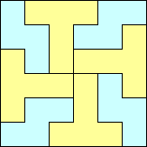
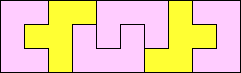
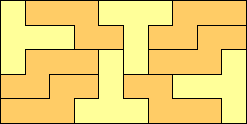
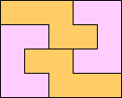
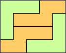
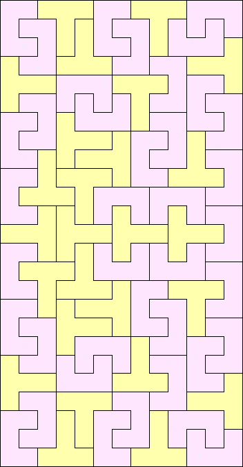
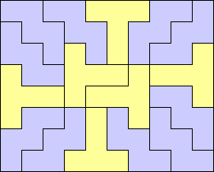
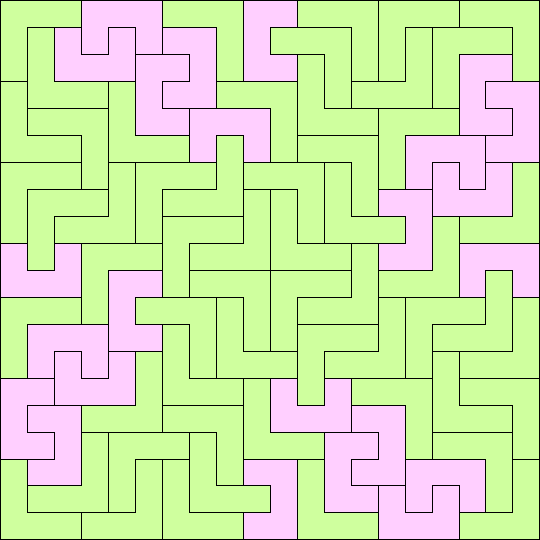
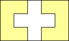
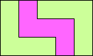

|
Prime Rectangles: 4x5 6x10 7x20, 7x30, 7x45, 7x55 9x10, 9x15 10x11 11x15 |
This month we consider collections of two polyominoes, neither of which can tile a rectangle separately, and ask which rectangles they tile jointly. For example, the U pentomino and the S tetromino can tile a 3x6 rectangle:
For a less trivial example, the V pentomino and the S tetromino can tile a 8x18 rectangle:
What other rectangles can these pairs of polyominoes tile? What about other pairs of non-rectifiable polyominoes?
Here are the smallest rectangles, and a list of prime rectangles for pairs of tetrominoes and pentominoes:
|  |
Prime Rectangles: 5x14, 5x20, 5x26, 5x32, 5x38, 5x44, 5x50 6x6, 6x8, 6x10, 6x11, 6x13, 6x15 7x10, 7x12, 7x13, 7x14, 7x16, 7x17, 7x18, 7x19, 7x21 8x8, 8x10, 8x11, 8x13, 8x15 9x10, 9x11, 9x12, 9x13, 9x14, 9x15, 9x16, 9x17, 9x18, 9x19 10x10, 10x11 11x11, 11x13 |
Prime Rectangles: 3x6 5x10, 5x18, 5x22, 5x26, 5x34 6x16, 6x17 7x10, 7x16, 7x18, 7x22, 7x23, 7x24, 7x25, 7x27, 7x29, 7x31 8x11, 8x12, 8x13, 8x14, 8x15, 8x16, 8x17, 8x19, 8x20, 8x21 9x10, 9x11, 9x13, 9x14, 9x15 10x11, 10x13 11x11, 11x13, 11x14, 11x15 13x13, 13x14, 13x15 14x14 |
Prime Rectangles: 8x16, 8x18, 8x20, 8x22, 8x24, 8x26, 8x28, 8x30 9x18, 9x21, 9x24, 9x27, 9x30, 9x33 10x14, 10x16, 10x18, 10x20, 10x22, 10x24, 10x26 11x12, 11x18 12x12, 12x13, 12x14, 12x15, 12x16, 12x17, 12x18, 12x19, 12x20, 12x21 13x18 14x14, 14x16, 14x18 15x15, 15x18, 15x21 |
|  |
Prime Rectangles: 3x10 6x15 7x10, 7x15 8x25, 8x35, 8x40, 8x45, 8x55 9x15 10x11 11x15 |
|
Prime Rectangles: 4x5 6x10 7x20, 7x30, 7x45, 7x55 9x10, 9x15 10x11 11x15 |
|  |
Prime Rectangles: 5x10, 5x16, 5x18, 5x22, 5x24 6x10, 6x15 7x10, 7x15 8x10, 8x15 9x10, 9x15 11x15 |
|  |
Prime Rectangles: 4x5 7x40, 7x50, 7x55, 7x60, 7x65, 7x70, 7x75, 7x85 9x15, 9x25 10x13, 10x14, 10x15 11x15, 11x20, 11x25 |
|  |
Prime Rectangles: 4x5 5x6 7x10, 7x15 9x15 11x15 |
|  |
Prime Rectangles: 12x30, 12x40, 12x45, 12x50, 12x55, 12x65 13x25, 13x30, 13x35, 13x40, 13x45 14x35, 14x40, 14x45, 14x50, 14x55, 14x60, 14x65 15x24, 15x28, 15x29, 15x31, 15x32, 15x33, 15x34, 15x35, 15x36, 15x37, 15x38, 15x39, 15x40, 15x41, 15x42, 15x43, 15x44, 15x45, 15x46, 15x47, 15x49, 15x50, 15x51 16x30, 16x35, 16x40, 16x45, 16x50, 16x55 17x20, 17x25, 17x30, 17x35 18x20, 18x25, 18x30, 18x35 19x25, 19x30, 19x35, 19x40, 19x45 20x20, 20x21, 20x22, 20x23, 20x24, 20x25, 20x26, 20x27, 20x28, 20x29, 20x30, 20x31, 20x32, 20x33 21x25, 21x30, 21x35 22x25, 22x30 |
|  |
Prime Rectangles: 8x10, 8x15 9x10, 9x25 10x10, 10x11, 10x12, 10x13, 10x14, 10x15 11x15 12x15 13x15 14x15 15x15, 15x17 |
|  |
Prime Rectangles: 14x40, 14x45, 14x50, 14x55, 14x60, 14x65, 14x70, 14x75 15x28, 15x32, 15x36, 15x37, 15x38, 15x40, 15x41, 15x42, 15x43, 15x44, 15x45, 15x46, 15x47, 15x48, 15x49, 15x50, 15x51, 15x52, 15x53, 15x54, 15x55, 15x57, 15x58, 15x59, 15x61, 15x62, 15x63, 15x67 16x30, 16x35, 16x40, 16x45, 16x50, 16x55 17x30, 17x35, 17x40, 17x45, 17x50, 17x55 18x30, 18x35, 18x40, 18x45, 18x50, 18x55 19x30, 19x35, 19x40, 19x45, 19x50, 19x55 20x20, 20x21, 20x22, 20x23, 20x25, 20x26, 20x27, 20x28, 20x29, 20x30, 20x31, 20x32, 20x33, 20x34, 20x35, 20x36, 20x37, 20x38, 20x39 21x25, 21x30, 21x35 22x25, 22x30, 22x35 23x25, 23x30, 23x35 24x25, 24x30, 24x35, 24x40, 24x45 25x25, 25x26, 25x27, 25x28, 25x29, 25x30, 25x31, 25x32, 25x33, 25x34, 25x35, 25x36, 25x37, 25x38, 25x39 26x30, 26x35 27x30, 27x35 29x30, 29x35 30x30, 30x31 |
|  |
Prime Rectangles: 3x5 17x85, 17x110 19x40, 19x65 20x70, 20x71 22x50 23x35, 23x40 25x28, 25x38 28x35 |
 |
Prime Rectangles: 12x20, 12x25, 12x30, 12x35 13x35, 13x40, 13x45, 13x50, 13x55, 13x60, 13x65 14x30, 14x35, 14x40, 14x45, 14x50, 14x55 15x23, 15x24, 15x25, 15x26, 15x27, 15x28, 15x29, 15x30, 15x31, 15x32, 15x33, 15x34, 15x35, 15x36, 15x37, 15x38, 15x39, 15x40, 15x41, 15x42, 15x43, 15x44, 15x45 16x25, 16x30, 16x35, 16x40, 16x45 17x25, 17x30, 17x35, 17x40, 17x45 18x20, 18x25, 18x30, 18x35 19x20, 19x25, 19x30, 19x35 20x20, 20x21, 20x22, 20x23, 20x25, 20x26, 20x27, 20x28, 20x29 21x25, 21x30, 21x35 22x25, 22x30, 22x35 23x25 25x25, 25x26 |
|  |
Prime Rectangles: 3x5 4x5 |
Earl S. Kramer; Tiling Rectangles with T and C Pentominoes, 16 (1983) 102-113.
Earl S. Kramer, Frits Göbel; Tiling Rectangles with Pairs of Pentominoes, 16:3 (1983-84) 198-206.
Richard G. Laatsch; Rectangles from Mixed Polyomino Sets, 13:3 (1980-81) 183-187.
C. Jepsen; On tiling deficient rectangular boards with trominoes, (1995) v. 27(2) p. 125-130.
If you can extend any of these results, please e-mail me. Click here to go back to Math Magic. Last updated 2/3/01.